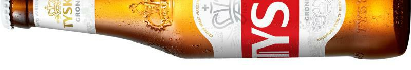

Poradnik jak zainstalować mody
Premium
NonPremium
WIKI
alex's mobs
better advancements
better dogs
beyond earth
botania
chat heads
collective
creeper overhaul
Critters and Companions
Curios API
Distant Horizons
Doggy Talents
Double Doors
formations nether
ghost
goblin traders
hamsters
just enough items
loaf cats
mighty mail
MrCrayfish's Furniture
night lights
oh the biomes youll go
repurposed structures
ribbits
simple planes
towns and towers
ultimate cars mod
when dungeons arise
xaero's minimap
YUNG's Better (wszystko)